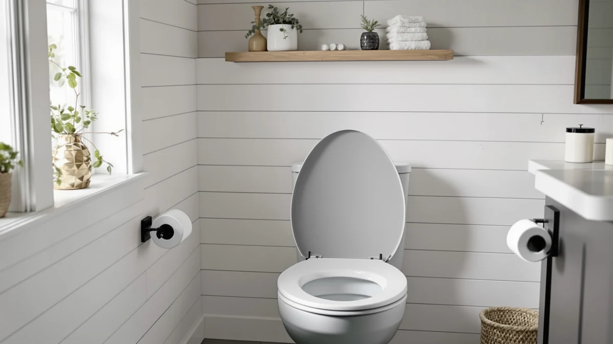

How to Remove Green From Toilet Seat Hinges: Complete Guide (2026)
Prices and picks verified as of September 2026. Independent, reader-supported reviews.


Things to Know Before You Buy
- Green hinge stains almost always come from copper or brass corrosion, not mold, so a disinfectant alone will not remove them.
- White vinegar and baking soda clear most cases in under 30 minutes without scratching chrome or stainless finishes.
- Bleach and abrasive scrub pads can pit metal hinges and make future corrosion worse, so skip them here.
- You do not need to replace the whole seat unless the hinge post itself has cracked or seized.
- A thin coat of mineral oil after cleaning slows how fast the green color comes back.
If you want to know how to remove green from toilet seat hinges, the short answer is vinegar, baking soda, and about half an hour of your time. The green tint that creeps across hinge posts and bolts is corrosion, usually from copper or brass hardware reacting with moisture and hard water minerals, and it is not something a bathroom spray will touch. You need to loosen the hardware, get an acid on the buildup, and scrub it loose before it eats further into the metal.
Homeowners often assume the hinge is failing and jump straight to replacing the whole seat. In most cases the metal underneath the green layer is fine, and the fix takes one soak, one scrub, and a rinse. The steps below walk through removing the seat, dissolving the corrosion, and protecting the hinges so the stain takes longer to return.
What You'll Need
- Supplies: white vinegar, baking soda, microfiber cloths
- Tools: old toothbrush or soft-bristle brush, adjustable wrench or screwdriver
Step 1: Remove the seat from the bowl
Start by loosening the two bolts that hold the hinges to the bowl. Most toilet seats use plastic wing nuts underneath the rim, and you can usually turn these by hand. If they have corroded in place, grip them with an adjustable wrench while you turn the bolt head from above with a screwdriver.
Once both bolts are free, lift the seat and lid straight up and off the bowl. Set it on a towel on a flat surface where you can reach every side of the hinge assembly. Working with the seat off the bowl also keeps vinegar and baking soda paste away from the porcelain and the floor.
Step 2: Soak the hinges in vinegar
Pour undiluted white vinegar into a small container, enough to submerge the hinge posts and bolts, and let the hardware sit for 15 to 20 minutes. The acid in the vinegar breaks down the copper oxidation and mineral scale that make the hinges look green, loosening the deposits so they lift away instead of needing to be scraped off.
If the hinges are fixed to the seat and cannot be removed for a full soak, soak a cloth in vinegar instead and wrap it directly around each hinge. Check the hardware every five minutes. When the vinegar starts to look cloudy or slightly discolored, that is the corrosion dissolving into the liquid.
Step 3: Scrub with a baking soda paste
Mix baking soda with a small amount of water until it forms a thick paste, then work it into the hinge with an old toothbrush or another soft-bristle brush. The mild abrasive in the paste lifts the loosened green residue out of the threads and crevices where a cloth alone cannot reach.
Focus on the areas where the hinge post meets the bolt, since corrosion tends to concentrate at that joint. Avoid metal scouring pads or anything more abrasive than a soft brush. Chrome and stainless finishes scratch easily, and a scratched surface corrodes faster than a smooth one.
Step 4: Rinse and dry the hardware
Rinse the hinges under warm running water to clear away both the baking soda paste and any remaining vinegar. Leftover vinegar residue can continue reacting with the metal if it is left to sit, so a thorough rinse matters as much as the soak itself.
Dry every part of the hinge completely with a microfiber cloth, including inside the bolt threads. Trapped moisture is the main reason the green color comes back within a few weeks, so do not skip this step even if the hardware looks dry on the surface.
Step 5: Reattach the seat and protect the hinges
Bolt the seat back onto the bowl, tightening the wing nuts by hand until the seat sits flush and does not shift side to side. Avoid overtightening plastic hardware, since cracked wing nuts are a common reason people end up shopping for a full replacement seat.
Finish by wiping a thin layer of mineral oil or petroleum jelly onto the cleaned hinge surfaces. That thin barrier keeps moisture from reaching the bare metal directly, which slows down how quickly new corrosion forms and buys you months before the hinges need attention again.
Common Mistakes to Avoid
The most common mistake when tackling how to remove green from toilet seat hinges is reaching for bleach first. Bleach disinfects, but it does nothing to dissolve copper oxidation or mineral scale, and repeated exposure can pit chrome and stainless finishes, which gives future corrosion more surface area to grab onto. Stick with vinegar for the actual chemical work.
Another mistake is scrubbing with steel wool or a metal scraper to speed things up. These tools cut through plating in seconds, and once the protective layer is gone, the base metal underneath corrodes far faster than before. A soft-bristle brush and a little patience during the vinegar soak get the same result without the damage.
Owners also skip the drying step, wiping the hinges once and reassembling the seat while moisture is still trapped in the bolt threads. That leftover moisture is exactly what restarts the oxidation process, often within a couple of weeks. Take the extra two minutes to dry every crevice with a microfiber cloth before you protect the metal with oil.
Finally, some people replace the entire seat the moment they see green hardware, assuming the corrosion means the hinge is failing. Unless the post has visibly cracked or the seat wobbles after cleaning, the hardware underneath the stain is usually intact and worth cleaning before you spend money on a new seat.
Our Top Picks
If your current hinges are too far gone to save, or you would rather start with hardware built to resist corrosion in the first place, these three picks are worth a look based on our research into materials and owner reviews.

Editor’s Pick
1 Pack Heated Toilet Seat
This Enhon heated seat mounts on a standard round bowl with hinge hardware separate from the heating element, so cleaning the hinges never means touching any wiring.
$24.99
Check Price on Amazon
Best Value
KOHLER 4647-0 Stonewood Elongated Toilet
Kohler's Stonewood comes with hinge hardware rated for moisture-heavy bathrooms, which owners report holds up well against the corrosion that causes green staining.
$23.01
Check Price on Amazon
Premium Choice
Mayfair Natural Oak Veneer Toilet
The Mayfair's stainless-steel hinge posts are built specifically to resist the kind of oxidation that turns brass hardware green. That makes it a solid upgrade pick for hard water homes.
$37.63
Check Price on AmazonFrequently Asked Questions
What causes the green stains on toilet seat hinges?
The green color usually comes from oxidized copper or brass inside the hinge hardware reacting with moisture, or from mineral deposits in hard water building up on chrome-plated hinges over time.
Is green corrosion on toilet seat hinges dangerous?
It is not a health hazard in the amounts found on hinge hardware, but left untreated it can weaken the metal and cause the hinge to seize or crack.
Can I use bleach instead of vinegar on the hinges?
Skip bleach on metal hinges. It can pit chrome and stainless finishes and speeds up corrosion, while white vinegar dissolves the same buildup without damaging the plating.
How often should I clean toilet seat hinges to prevent staining?
Checking the hinges every two to three months is usually enough in most homes. Households with hard water or high humidity may want to inspect them monthly, since mineral buildup forms faster in those conditions.
Will vinegar damage chrome-plated hinges?
A 15 to 20 minute soak in undiluted white vinegar is safe for chrome plating. Leaving hinges submerged for hours at a time is unnecessary and can dull the finish, so rinse and dry them once the soak is done.
Verdict
Knowing how to remove green from toilet seat hinges comes down to a simple sequence: vinegar to dissolve the corrosion, baking soda to scrub the residue loose, and a thorough dry before you put the seat back together. Most hinges recover fully with this method, and you can finish the whole job in about 30 minutes for less than the cost of a new seat.
If your hinges are cracked, seized, or corroded past the point of cleaning, replacing the hardware makes more sense than repeating the soak every month. Enhon's heated seat keeps the hinge assembly isolated from its electrical components, which makes ongoing maintenance simpler if you go that route. Either way, a thin coat of mineral oil after cleaning is the cheapest insurance against the green stain returning.